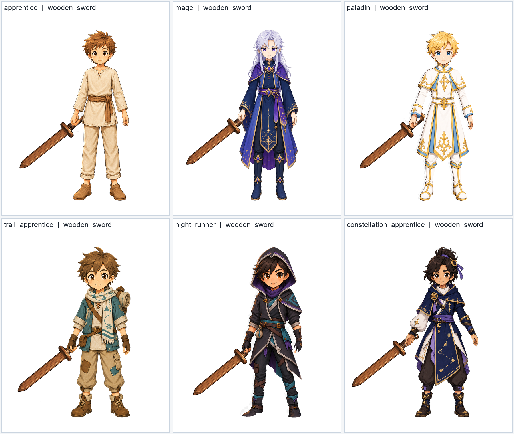
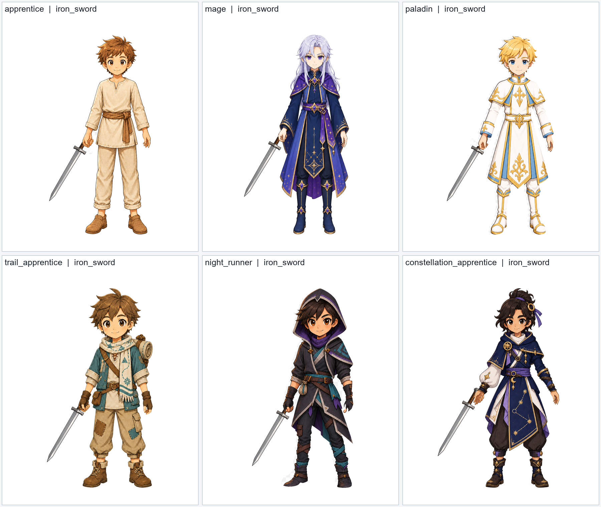
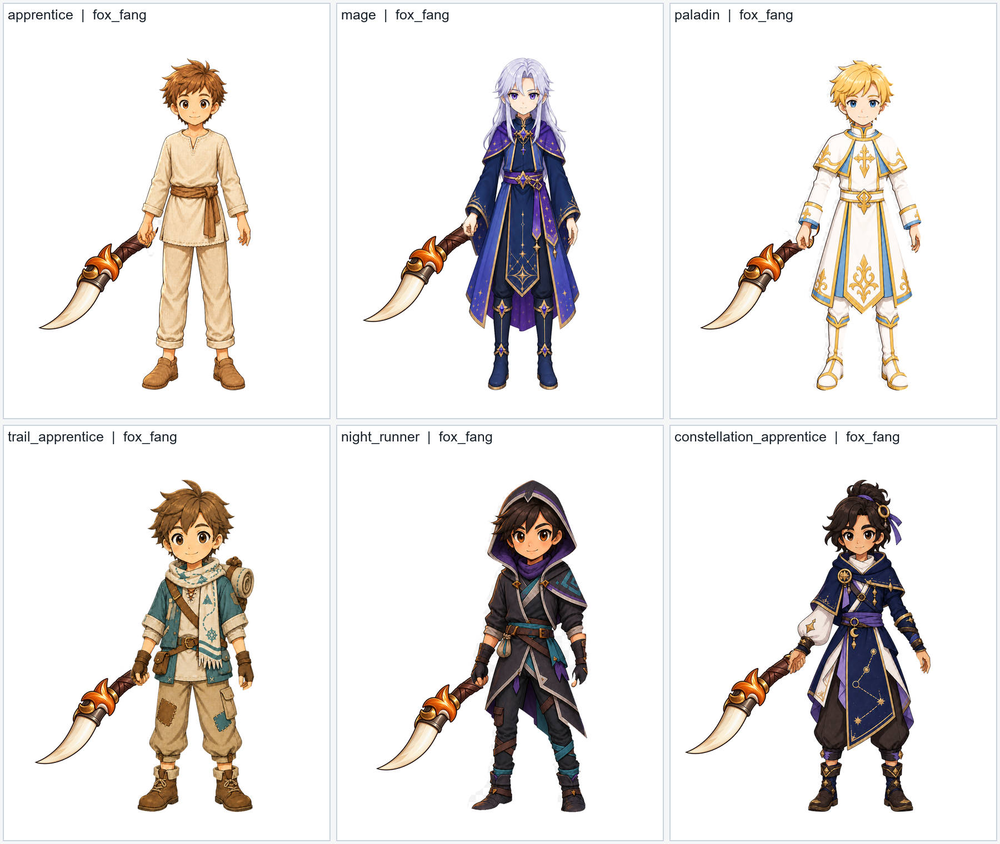
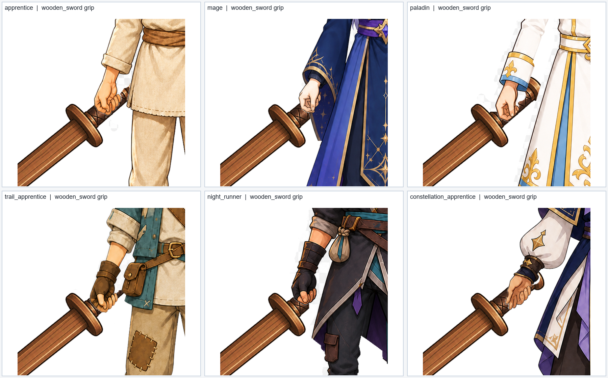

A052-R1D handheld weapon overlay composition
PENDING_OWNER_VISUAL_REVIEW — R1D-R1 frame-safe static composition retry. Runtime wiring is not active and Loadout remains OFF.
This pack compares the six Owner-approved weapon-free poses with the three candidate weapon-only overlays. It is designed to remain readable on desktop, tablet, and mobile-width screens.
Six-character wooden sword composition — frame-safe retry
The canonical 1056×1408 frame is preserved. This retry composes the character and weapon together on a 1264×1408 review canvas with 104px left/right padding, preserving all anchors, rotation, grip, and z-order while enforcing a positive visual safety margin.

Characters shown: apprentice, mage, paladin, trail_apprentice, night_runner, constellation_apprentice.
Cross-weapon composition evidence


Grip / occlusion inspection

Candidate handheld assets
| Weapon | Candidate asset | Contract |
|---|---|---|
| wooden_sword | wooden_sword.png | weapon-only RGBA, pending Owner visual review |
| iron_sword | iron_sword.png | weapon-only RGBA, pending Owner visual review |
| fox_fang | fox_fang.png | weapon-only RGBA, pending Owner visual review |
{kind=link}
{kind=link}
{kind=link}
Governance
- Composition input is server-owned
player_inventory.equipped; character poses are visual-only. - Rendering uses a back weapon layer so the character base occludes the hand contact; no mask is proposed.
- Existing waist overlays and
wearable_registry.jsonare unchanged; this is a dormant R1D contract. - Dragon claw and celestial blade are deferred from V1. No combat, inventory, app.py, or Loadout behavior is changed.
- The pre-existing missing
go_stone_black.pngregistry-reference test issue is unrelated and remains unrepaired.